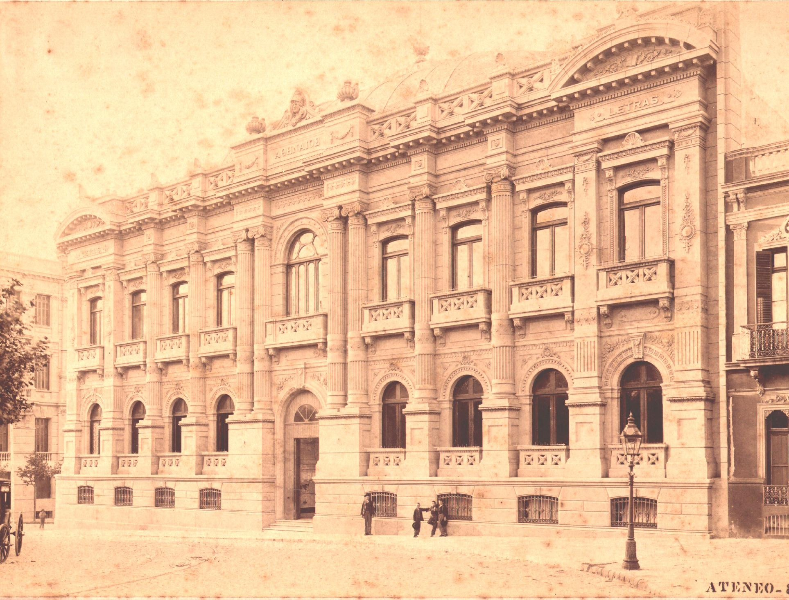

Identidad visual
Uso de logos oficiales, imagen principal del edificio, imagen aniversario y material historico para alejar la web de una plantilla generica.

Ateneo de Montevideo
Informe de presentacion para compartir con directivos y referentes institucionales. Resume el trabajo implementado en la nueva web, su valor comunicacional y los proximos pasos recomendados.

La nueva version del sitio busca presentar al Ateneo con una presencia mas clara, patrimonial y actual. La estructura se organizo para que cualquier visitante pueda entender rapidamente que es el Ateneo, donde esta, que cursos ofrece, cual es su historia y como contactarse.
El trabajo combina una estetica editorial vinculada al archivo cultural con herramientas practicas: navegacion por secciones, paginas especificas, consulta por WhatsApp, estructura SEO y contenido institucional preparado para crecer.
Uso de logos oficiales, imagen principal del edificio, imagen aniversario y material historico para alejar la web de una plantilla generica.
Menu superior con secciones principales y submenu "Sobre el Ateneo": Estatutos, Directivos y Presidentes.
Historia, estatutos, salas, visitas y contacto quedan organizados como paginas navegables y no como bloques sueltos.
Cursos con paginas propias, consulta por WhatsApp y formulario visual listo para activar cuando se defina el flujo operativo.
Diseño, contenido y navegacion
La home concentra el relato principal, pero cada tema relevante tiene su propio recorrido: cursos, salas, historia, estatutos, visita y contacto.
| Area | Trabajo aplicado | Impacto esperado |
|---|---|---|
| Home | Hero con fachada, cursos, salas, historia, visita y video final. | Entrada clara, fuerte y reconocible para publico general. |
| Historia | Texto institucional desde archivo y galeria de imagenes historicas. | Refuerza patrimonio, trayectoria y autoridad cultural. |
| Estatutos | Documento reorganizado por capitulos, secciones y articulos destacados. | Lectura formal, ordenada y facil de consultar. |
| Cursos | Listado filtrable, detalle individual y consulta por WhatsApp. | Mayor facilidad para convertir interes en contacto. |
| Salas | Tarjetas visuales y paginas de detalle con figuras historicas. | Mayor presencia del legado institucional y de sus espacios. |
| Footer | Logo aniversario, enlaces y ubicacion. | Cierre consistente, institucional y orientado a accion. |
Criterio de diseño: preservar la solemnidad cultural del Ateneo, pero con una interfaz actual, clara y navegable. La web no busca parecer promocional; busca parecer institucional, viva y util.
Se incorporaron mejoras tecnicas para que Google rastree y comprenda mejor la web. Esto no garantiza automaticamente enlaces enriquecidos bajo el resultado principal, pero mejora las condiciones para que Google los genere con el tiempo.
La meta es que el Ateneo aparezca en Google con una presentacion mas completa: pagina principal, cursos, historia, estatutos, contacto y otras secciones importantes.
Publicar el sitio, verificar el dominio en Google Search Console y enviar el sitemap.
Completar Directivos y Presidentes con informacion oficial, mantener cursos actualizados y sumar contenido periodico.
Compilacion correcta, sin errores de TypeScript o Vite.
Rutas principales y enlaces internos revisados con respuesta 200.
Metadata, canonicals, JSON-LD, robots y sitemap verificados.
Se corrigio contraste, encuadre del hero, menu, botones y legibilidad general.

El sitio queda preparado para presentarse, publicarse y empezar a medir resultados. La siguiente etapa deberia concentrarse en completar contenido institucional pendiente y activar herramientas de seguimiento.
Subir la version final al dominio oficial y revisar que todas las rutas funcionen con HTTPS.
Verificar ateneodemontevideo.uy y enviar el sitemap para acelerar el rastreo.
Completar Directivos y Presidentes para reforzar confianza institucional y busquedas de marca.
Activar el formulario de cursos cuando se defina si enviara a email, planilla, CRM o sistema propio.
Conclusion: la web queda como una plataforma institucional moderna, con base SEO inicial, contenido patrimonial, navegacion clara y capacidad de evolucionar hacia inscripciones, agenda cultural y medicion de resultados.